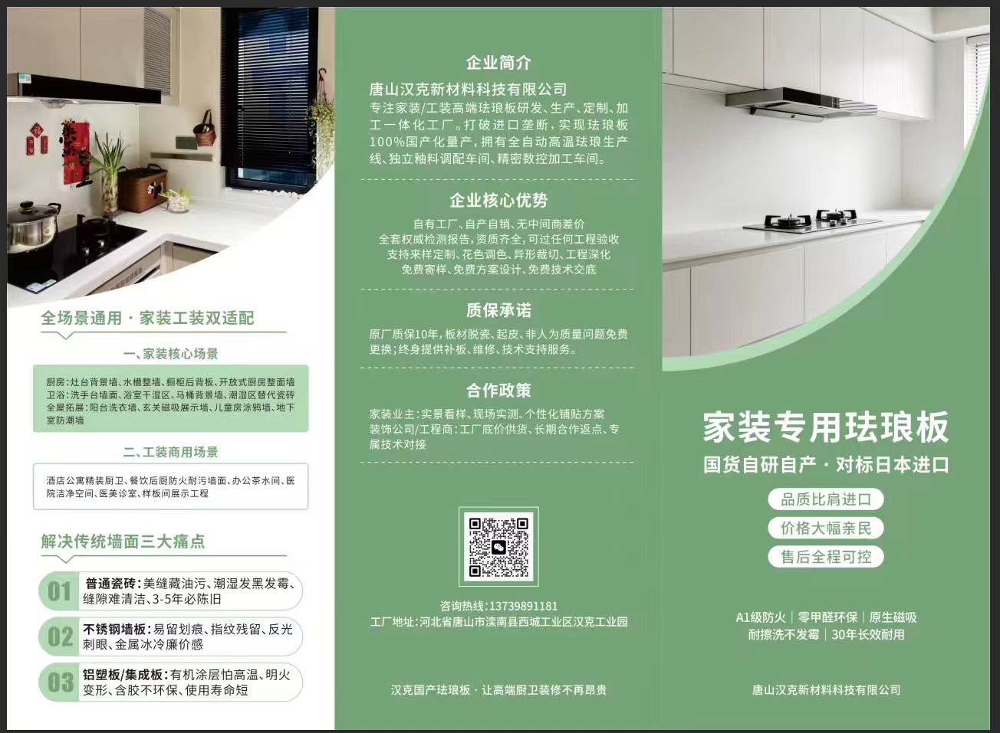
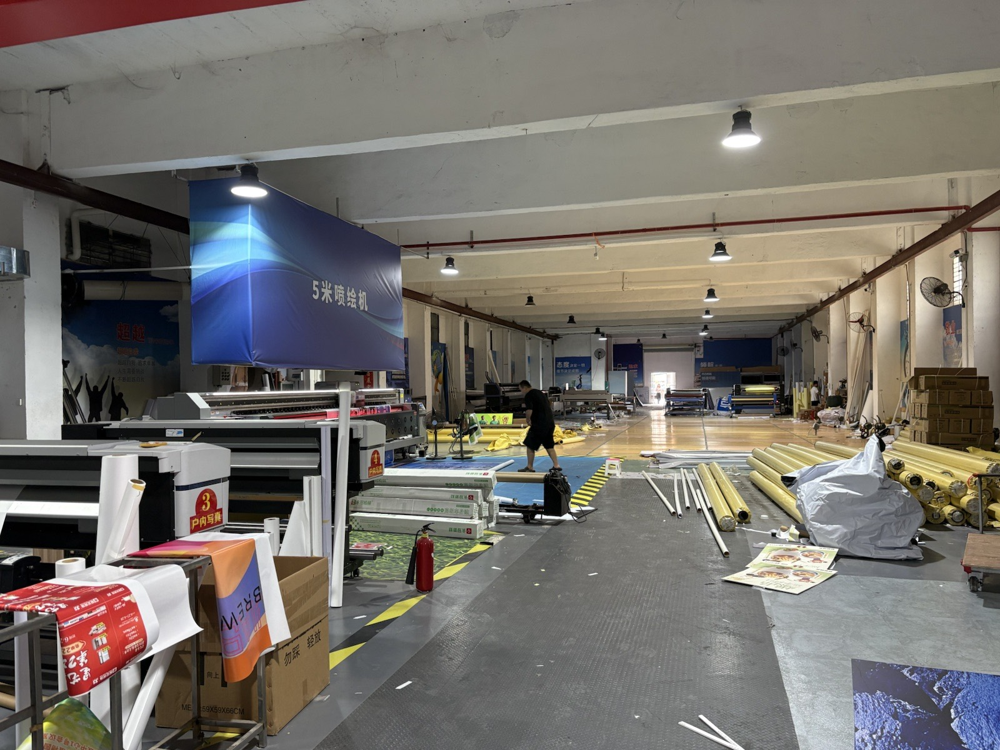
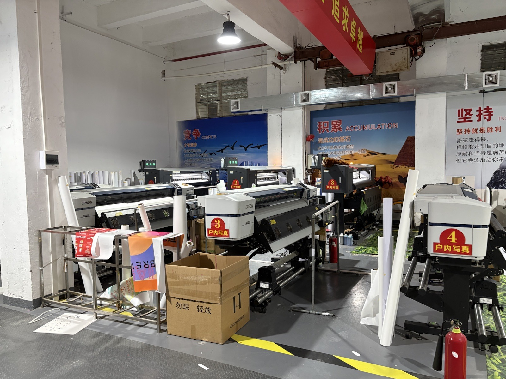
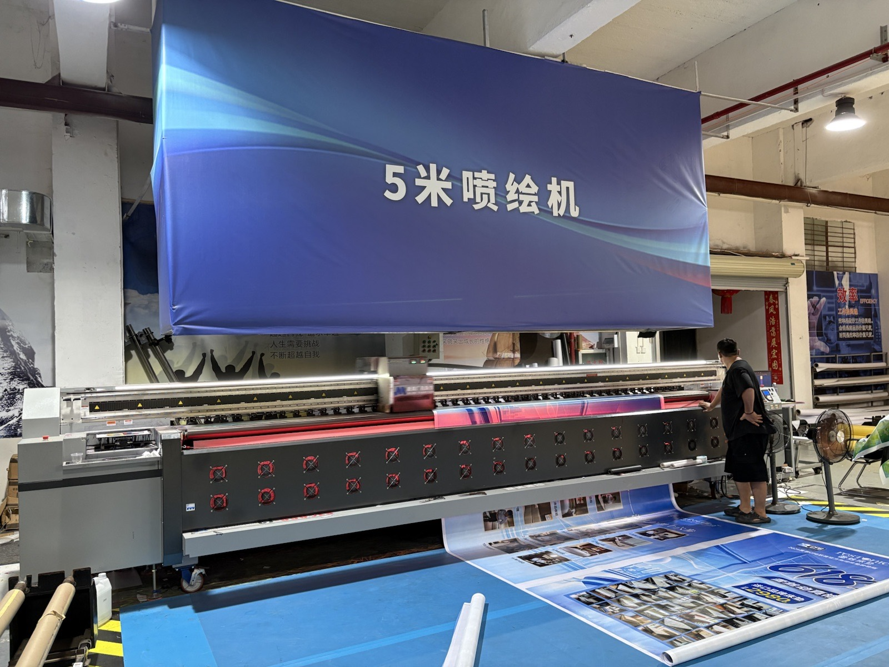
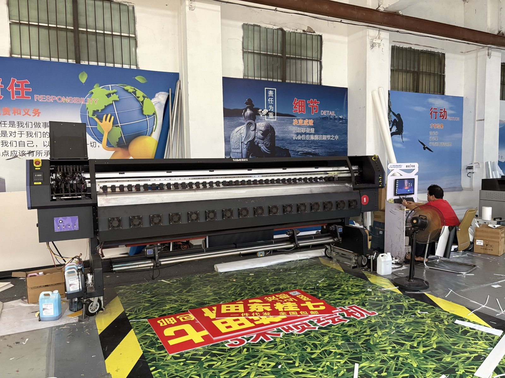
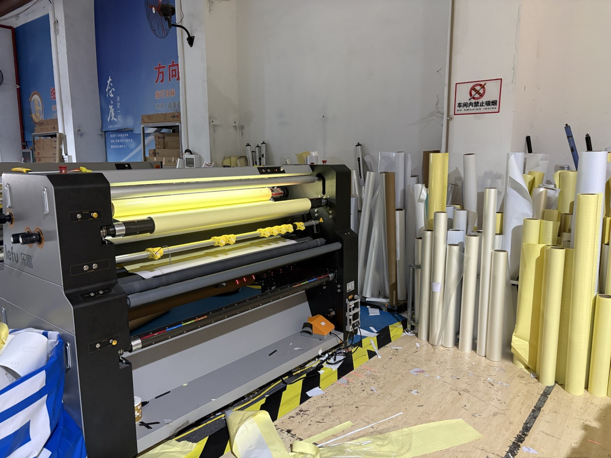
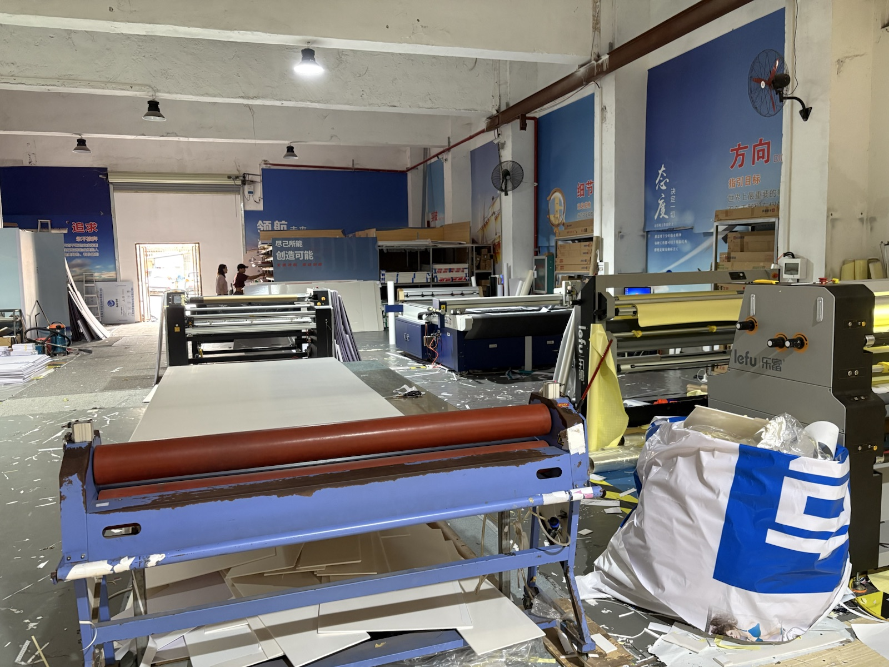

China Factory & Supply Records
WPC Decking Material Factory
Photos / videos to be added
WPC decking material, factory stock, and pre-shipment status record.
Material + Install
Enamel magnetic panels for kitchens, wet areas, and shop walls, arranged with material, site measurement, standard installation, and warranty scope confirmation.

Quote
Products come after the supply records. Pricing changes by size, quantity, specification, and delivery address.
Material, site measurement, standard installation, and initial issue check within scope
Ref. ¥29,800/sqm～Wall flatness, existing wall, openings, and fixing method checked on site
Ref. ¥36,800/sqm～Unit price adjusted by quantity, carrying route, cutting, and packing conditions
Ref. ¥24,800/sqm～| Specification | Standard kitchen wall | With substrate adjustment | Large area / shop |
|---|---|---|---|
| 0.4mm finished / approx. 3.4kg/sqm | ¥27,800/sqm～ | ¥34,800/sqm～ | ¥24,800/sqm～ |
| 0.5mm finished / approx. 4.3kg/sqm | ¥29,800/sqm～ | ¥36,800/sqm～ | ¥26,800/sqm～ |
| 0.6mm finished / approx. 5.2kg/sqm | ¥32,800/sqm～ | ¥39,800/sqm～ | ¥29,800/sqm～ |
Tax-included reference. Includes material, factory standard packing, basic logistics cost, site measurement, standard installation, handover check, and initial issue check within the agreed scope. Parking fees, tolls, difficult carrying work, removal of existing material, substrate repair, high-place work, special fixing, opening cuts, remote areas, and building-management documents are checked separately.
Product Guide Images
Material Notes
Finished thickness is checked at 0.4 / 0.5 / 0.6mm. Base steel 0.2 / 0.3 / 0.4mm, front enamel about 150μm, back side about 50μm are checked case by case.
Checked on the basis of 800°C+ firing. Reference weight: 0.4mm approx. 3.4kg/sqm, 0.5mm approx. 4.3kg/sqm, 0.6mm approx. 5.2kg/sqm.
Maximum 3150mm x 950mm is used as a reference. Color, factory pre-cut, openings, and edge processing are checked by drawing.
Inspection documents, fire-related specification, and regulatory checks are confirmed case by case. We do not present them as universally certified.
Fit
Caution
Before Quote
Common Issues
Supply Chain
Kyoken supports factory coordination, material arrangement, specification checks, packing, international logistics, Japan-side site measurement, standard installation, handover, and warranty scope confirmation. Complex work, high-place work, substrate repair, and electrical work are checked in advance.
FAQ
Photos and dimensions are enough to start a rough review.
Pricing changes by size, quantity, specification, delivery address, and installation conditions.
It depends on product and quantity; send photos and requirements first.
Standard installation can be discussed by project; complex work, high-place work, and special fixing are checked in advance.
Send site photos, dimensions, quantity, delivery area, and preferred timing.
Supply Chain
Kyoken can provide material and standard installation by project. In contractor partnership cases, customer ownership, referral terms, construction scope, and warranty scope are clarified in advance.
Photos, drawings, dimensions, specifications, and work scope.
Material and production feasibility confirmation.
Carton, edge protection, labels, pallet or roll packing.
International route and Japan-side delivery conditions.
Site measurement, standard installation, handover, and warranty scope.
WPC decking material, factory stock, and pre-shipment status record.






Advertising material production, pre-shipment check, and packing status record.
Pricing varies by dimensions, quantity, delivery address, and installation conditions. Standard installation can be discussed by project. Complex work, high-place work, substrate repair, special fixing, and electrical work are checked in advance and quoted separately.
Request Details
For now, we keep this lightweight: send documents on LINE, then receive a specification check and quote or payment link.
Send product name, photos, dimensions, quantity, and delivery area. A rough quote is provided after specification review.